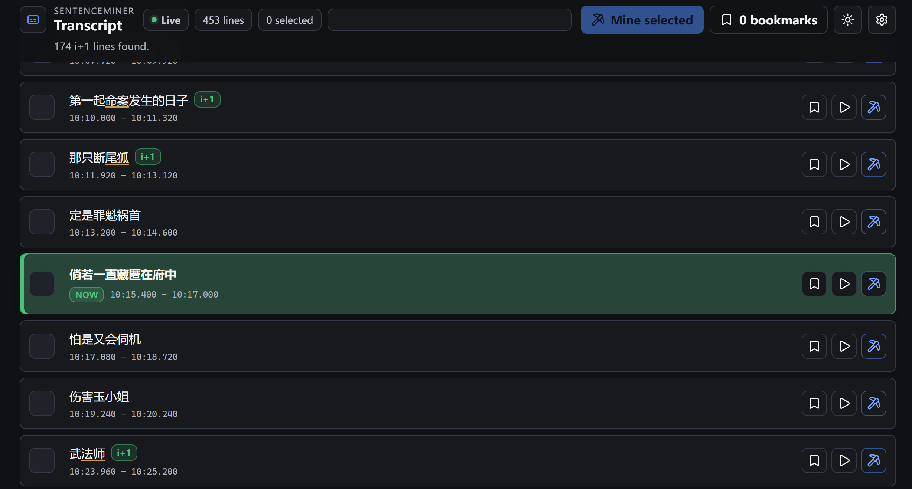

Live mpv transcript
Keep the active subtitle history visible in a local browser while mpv plays.
for Chinese
Mine from local video and YouTube. Creating Anki cards with matching audio and screenshots.

What it handles
Keep the active subtitle history visible in a local browser while mpv plays.
Press the mining shortcut to send the current subtitle into your configured Anki fields.
Capture matching audio and screenshots, with bundled ffmpeg in the packaged Windows release.
Highlight transcript lines with exactly one unknown segmented word from your known-word field.
Everything included. No setup needed.
Save useful transcript moments as bookmarks so you can come back to them later.
Setup
Download SentenceMiner-latest.zip.
Extract to %appdata%/mpv.
Open a video in mpv, press Ctrl+Shift+m to enable, then press Ctrl+m to mine.
Latest package
Anki with AnkiConnect and mpv are required. Yomitan recommended for initial card creation.